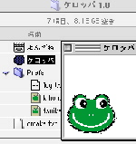
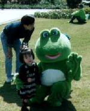
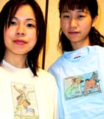

デスクトップにカエルの「ケロッパ」！ 【福岡発=覚田しゃちょう同志記者】「いつも大変お世話になっております。我が社が開発した、デスクトップキャラクター「ケロッパ」です。お忙しいところ、大変恐縮ですがぜひお試しいただき、ご意見・ご感想などいただければ幸いです。（社員代筆）「ケロッパ」は、以下のアドレスで連れてカエルことができます。
【全国かえる奉賛会】窓族も林檎族もともに楽しめるデスクトップカエルキャラクターが、ついに登場したぞおおおお。恐縮されるまでもなく、投稿いただいた即日から、連れてかえっています。うれしいなーっ！！オープニング画面が可愛いんだなー！！！大王もさっそく、連れてかえって飼っています。みんなも、会社のパソコンや自宅のパソコンに、どんどんインストールして、「ケロッパ」を飼おうではないかああああ。 味気ない仕事でも、「ケロッパ」が励ましてくれたり、いっしょに遊んでくれたりするぞ。
 カエルのケロン太が競馬場に出現！【大阪発=革命的カエル劇団TAILS様】大阪の劇団テイルス豊岡です、前回はうちのケロン太の紹介ありがとうございました、今回はケロン太君の活躍風景を送ります。撮影した場所は「兵庫県阪神競馬場」です。なぜか、イベント「獣医師連盟主催の動物愛護イベントに出演」して、子供たちと触れ合うケロン太でした。
【全国かえる奉賛会】動物愛護運動に欠かせないのがカエルキャラクターなのである。カエルペットも増殖していることだし、獣医師さんたちも、ペット治療になじむために、カエルキャラを積極的にイベント起用してくれているのであろう。 引っ越しはカエルの「タカラ引越センター」！
わが家の近所でも、ここのトラックを時々見かけ、大変気になっており、車の運転中にすれ違ったりすると危険だったりします。残念ながら今まで、写真に撮る機会がありませんでしたが、最近ホームページが開設されたので、ご報告します。
特に、TOPのフラッシュムービーは、一見の価値ありと思います。
住みカエルならタカラ引越しセンター！【全国かえる奉賛会】素晴らしい引っ越しセンターである。奉賛会推薦引っ越しセンターとして、認定するので、タカラ引越センターの方からの、宣伝投稿を待つ！ ガハクのカエルデザイン４種を販売開始！【けろテン市場】福岡で確実な人気を持つイラストレーター／ワタナベ□ガハクがデザインした、カエルイラストを使った、Ｔシャツ、キャミソール、ロンパース、バッグ３０種類以上の商品を、ケロ天市場で発売をはじめた。今すぐに、けろテン市場をチェックしていてくれい！
投稿採用者に武功カエル徽章を授与！ |
||||||||||||||||||||||||||||||
かえる古新聞過去に取り上げた記事を見出し付きで一覧したい人は、ここをクリック◆創刊号を見る◆先週号を見る◆話題の号を見る◆かえる新聞の昔を読む◆COOL NET FROG RANKING !
|
私も入っています。。全国かえる奉賛会
大王様に会うには、このバナーをクリック。ずっと奥に写真館があるぞ。全国かえる奉賛会に入会するには、自分のホームページのどこかに、下の部分を追加するとバナーがリンク付きで表示されるぞ。どんどん入会しましょー |


|